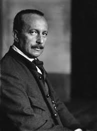

BAMBI

El personaje del cual hablaremos sera de Bambi, el cervatillo de Disney.
Bambi


Bambi es un tierno ciervo de cola blanca que protagoniza la película animada “Bambi” (1942) de Disney, basada en el libro “Bambi, una vida en el bosque” del escritor Felix Salten, publicado en 1923. La historia sigue su crecimiento desde que es un cervatillo curioso e inocente hasta que se convierte en un ciervo adulto fuerte y sabio, heredando el título de Príncipe del Bosque. Bambi vive rodeado de naturaleza y aprende poco a poco sobre el mundo que lo rodea. A lo largo de su vida, hace grandes amigos como Tambor, un conejo travieso; Flor, una mofeta muy dulce; y Faline, una cierva que se convierte en su compañera. Junto a ellos, Bambi vive momentos alegres, como jugar en la pradera o descubrir la nieve por primera vez. Pero también enfrenta situaciones tristes y difíciles, como la pérdida de su madre a manos de los cazadores humanos. Esa parte de la historia es muy famosa por ser una de las más tristes del cine animado. Con la ayuda de su padre, el Gran Príncipe del Bosque, Bambi aprende a ser fuerte, a proteger a los suyos y a sobrevivir en un mundo a veces peligroso. Finalmente, Bambi crece y forma su propia familia, continuando el ciclo de la vida en el bosque. Su historia es un mensaje sobre el crecimiento, la naturaleza, la pérdida, la amistad y la esperanza.
Personajes
Tambor
Tambor es un conejito travieso y juguetón, uno de los primeros amigos de Bambi. Es muy gracioso, alegre y leal, y siempre está dispuesto a ayudar. Tiene una personalidad chispeante y una risa contagiosa que lo hacen inolvidable. Es quien le enseña a Bambi muchas cosas importantes en su niñez, como hablar, caminar y explorar el bosque. A pesar de su tamaño, Tambor demuestra una gran valentía y un corazón enorme.
Flor
Flor es una mofeta tímida y dulce, muy educada y sensible. Aunque al principio se asusta con facilidad y se sonroja cuando Bambi le pone su nombre por error, se convierte en un gran amigo. Tiene una personalidad delicada pero muy valiente, y muestra que la fuerza no siempre viene de lo físico, sino del corazón. Es amable, respetuoso y siempre apoya a sus amigos.
Papa Bambi
Es el padre de Bambi, un majestuoso ciervo que cuida y vigila el bosque con sabiduría. Es fuerte, serio y respetado por todos los animales. Al principio parece distante, pero en realidad es muy protector y amoroso a su manera. Cuando Bambi pierde a su madre, es él quien lo recoge y lo guía en su camino hacia la adultez. Representa el ejemplo de liderazgo y fortaleza que Bambi debe seguir.
Curiosidades sobre Bambi
- La película se basa en el libro "Bambi: Una vida en el bosque" (1923) escrito por Felix Salten, un autor austriaco.
- La escena de la muerte de la madre de Bambi es considerada una de las más tristes en la historia del cine infantil.
- Fue una de las primeras películas de Disney que usó animación realista basada en estudios de animales vivos y bosque natural.
- El desarrollo de la película tomó casi una década debido al nivel de detalle y realismo que Disney quería lograr en cada escena.
- Bambi fue elegido por el Instituto Americano del Cine como uno de los héroes cinematográficos más importantes de todos los tiempos.
- En 2011, fue seleccionado para ser preservado en el Registro Nacional de Cine de los Estados Unidos por su importancia cultural, histórica y estética.
Autor
El autor de la historia original de Bambi fue Felix Salten, cuyo verdadero nombre era Siegmund Salzmann. Nació el 6 de septiembre de 1869 en Budapest, Hungría, y emigró a Viena con su familia cuando era niño.
Salten fue un escritor, periodista y crítico literario judío austriaco. A lo largo de su carrera escribió novelas, cuentos, obras de teatro y ensayos. Sin embargo, su obra más conocida a nivel mundial es "Bambi: Eine Lebensgeschichte aus dem Walde" (Bambi: una historia de vida en el bosque), publicada en 1923.
Esta novela no era originalmente para niños, sino una profunda reflexión sobre la vida, el miedo, la supervivencia y la naturaleza, vista desde los ojos de un ciervo. Más tarde, Disney adaptó esta obra al público infantil con una versión más tierna y accesible.
Por ser judío, Felix Salten se vio obligado a huir de Austria durante la Segunda Guerra Mundial. Se exilió en Suiza, donde vivió hasta su muerte el 8 de octubre de 1945. Aunque muchas de sus otras obras han sido olvidadas, **Bambi** lo inmortalizó como un referente de la literatura ecológica y emocional.